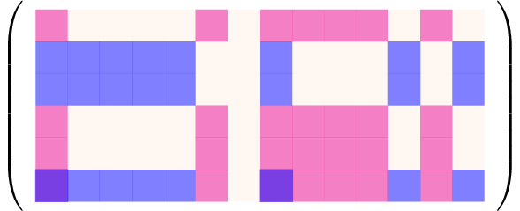
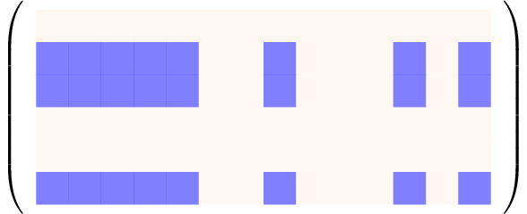
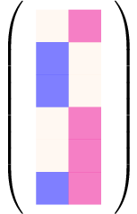
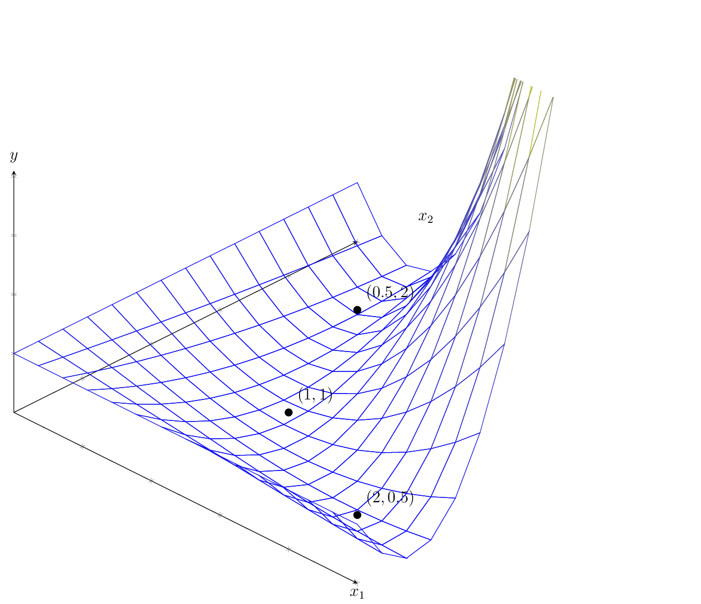

Low Rank Matrix Factorization#
{kind=link}
Fig. 10 Low rank matrix factorization can be used for recommender systems like Netflix#
Netflix gained its big popularity back in the days because it focused on its recommender system strength. They personalized content discovery, ensuring users stayed engaged by always having something new to watch. The task of recommendation is unsupervised, we don’t know the ground truth recommendations, as opposed to supervised tasks, where we have a label or target variable. All we have are past user ratings, from which we try to derive common patterns that allow us to provide recommendations.
Let’s go through an example to get a clearer understanding of the recommender task. Imagine we represent all users and movies in a matrix, where each entry corresponds to a user’s rating for a movie. Then we get a massive, sparse matrix (since most users have only rated a small fraction of available movies). The challenge is to predict the missing ratings so that Netflix can suggest movies that a user is likely to enjoy. For example, the user-movie matrix could look like that:
User |
Star Wars |
Interstellar |
Blade Runner |
Tron |
2001: Space O. |
Mars Attacks |
Dune |
Matrix |
Robo Cop |
Aliens |
Terminator |
Solaris |
Avatar |
12 Monkeys |
|---|---|---|---|---|---|---|---|---|---|---|---|---|---|---|
Grace |
🤩 |
🤩 |
🙈 |
🤩 |
🤩 |
🤩 |
🤩 |
🤩 |
||||||
Carol |
🤩 |
🤩 |
🤩 |
🤩 |
🤩 |
🤩 |
||||||||
Alice |
🤩 |
🤩 |
🤩 |
🤩 |
🤩 |
🤩 |
🙈 |
|||||||
Bob |
🤩 |
🤩 |
🤩 |
🤩 |
🤩 |
🤩 |
🤩 |
|||||||
Eve |
🤩 |
🙈 |
🤩 |
🤩 |
🤩 |
🤩 |
||||||||
Chuck |
🤩 |
🤩 |
🤩 |
🤩 |
🤩 |
🤩 |
🤩 |
🤩 |
🤩 |
🙈 |
🤩 |
We have six users and 14 movies, that are rated either as I like it (🤩) or not for me (🙈). If no emoji is indicated, then the corresponding user has not seen the movie yet. This example matrix of user-movie preferences exhibits two patterns of preferences. The first pattern consists of the movies Star Wars, Interstellar, Blade Runner, Tron, 2001: Space Odyssey, Matrix, Solaris, and 12 Monkeys. This set of movies is popular in the user group of Carol, Alice and Chuck: every movie of the set is liked at least by two of the three users. Hence, we might consider to recommend each person of that group a movie from this set that the person has not watched yet. For example, we could recommend to Carol to watch 2001: Space Odyssey. Likewise, we identify a second pattern of movies that is popular among the group of Grace, Bob, Eve and Chuck. This pattern encompasses the movies Star Wars, Mars Attacks, Matrix, Robo Cop, Aliens, Terminator, and Avatar.
Let’s visualize the model that we are looking for as a matrix. Below you see the abstract representation of the groups of users and movies as a matrix. The first group of users (Carol, Alice and Chuck) and their corresponding set of (largely) liked movies is visualized in blue, and the second set of users (Grace, Bob, Eve and Chuck) and their set of movies are visualized in red.

The matrix above reflects the positive movie indications (🤩) by the nonzero cells, that are the ones that are colored. The last row reflects Chuck, who adheres to both movie patterns, that overlap in the movies Star Wars and Matrix. Hence, we see two cells in the last row with overlapping colors. The user-movie matrix can be decomposed into the sum of two matrices, where each matrix reflects one user-movie group.

\(+\)
Furthermore, each of the single user-group matrices can be represented by an outer product of a user- and a user-vector. And the sum of outer product matrices reflects a low-dimensional matrix product. In this casse, we have a product of two dimensionality two – one for each user-movie matrix.

The low-dimensional matrix product describing our user-movie preferences is now represented by two user-vectors (the columns of the left matrix) and two movie-vectors (the rows of the right matrix). Each pair of user- and movie-vectors indicates a group, exhibiting the same movie preferences. Note, that the original \(6\times 14\) matrix is now compressed into a \(6\times 2\)-matrix and a \(2\times 14\) matrix. While the original matrix contains \(6\cdot 14 = 84\) elements, the low-dimensional product needs only \(2\cdot 6 + 2\cdot 14 = 40\) elememts to be stored. That is roughly the idea of recommender systems: using reoccurences in the behaviour or similarities among users and movies to compress the data, and to use the compressed data representation to make recommendations.
Formal Problem Definition#
We formalize the idea to obtain recommendations by compressing the data as the task to minimize the squared Frobenius-norm error of a low-rank matrix product and the data matrix.
Task (Rank-r Matrix Factorization)
Given a data matrix \(D\in\mathbb{R}^{n\times d}\) and a rank \(r<\min\{n,d\}\).
Find matrices \(X\in \mathbb{R}^{d\times r}\) and \(Y\in\mathbb{R}^{n\times r}\) whose product approximates the data matrix:
Return the low-dimensional approximation of the data \((X,Y)\).
Note that the Rank-r matrix factorization task is not directly suitable to return recommendations. It only describes the task to compress a given data matrix into a low-dimensional product. To provide recommendations, we need to fill in missing values. We will discuss later how we can do this with a low dimensional matrix factorization.
First, we analyze properties of the objective, as it turns out, the low-dimensional matrix factorization task is nonconvex.
Theorem 28
The rank-\(r\) matrix factorization problem, defined for a matrix \(D\in\mathbb{R}^{n\times d}\neq\mathbf{0}\) and a rank \(1\leq r<\min\{n,d\}\) as
is a nonconvex optimization problem.
The proof follows from the fact that the set of global minimizers is not a convex set.
Proof. We show that the \(RSS(X,Y)\) is not a convex function. Therefore we assume first that the \(RSS(X,Y)\) is a convex function and show then that this assumption leads to a contradiction. Assuming that the \(RSS(X,Y)\) is a convex function means that the following inequality has to hold for all matrices \(X_1,X_2\in\mathbb{R}^{d\times r}\) and \(Y_1,Y_2\in\mathbb{R}^{n\times r}\) and \(\alpha\in[0,1]\):
For any global minimizer \((X,Y)\) of the rank-\(r\) MF problem, \((\gamma X, \frac{1}{\gamma} Y)\) is also a global minimizer for \(\gamma\neq 0\). However, for \(\alpha=1/2\) the convex combination attains a function value of
We observe that the approximation error in the last equation goes to infinity if \(\gamma\rightarrow \infty\). Hence, there exists multiple \(\gamma>0\) for which the \(RSS\) of the convex combination of two global minimizers is larger than zero. This contradicts the assumption that the \(RSS(X,Y)\) is convex.
We observe from the proof that there are infinitely many global minimizers for the low-dimensional matrix factorization task. Let’s explore this set of global minimizers by means of an example in one dimension.
Example 21 (One-dimensional matrix factorization)
The most easy case of a low-dimensional matrix factorization is the factorization of a single number. Let’s take for example the factorization of the number one into a product of two factors \(x_1\) and \(x_2\), having the objective function \(f(x_1,x_2) = (1-x_1x_2)^2\). We plot the graph of the objective function together with three solutions: \((x_1,x_2)=(2,0.5)\), \((1,1)\), and \((0.5,2)\).

We can observe the nonconvexity of this function by connecting the solution of \((0.5,2)\) with \((2,0.5)\) with a straight line. If the function would be convex, then the graph ofthe function would be under or on the line. Under the line is not possible in this case, since the solution points we picked are global minimizers. Hence, the graph should be flat (\(y\)-value equal to zero) on the line between the two solutions, but we see that the loss increases to the right. However, we also see that the loss function doesn’t look as if there is a multitude of valleys, that are local minima. That gives us hope, that the low-rank matrix factorization task is not that difficult to solve.
Optimization#
In most cases, nonconvexity of an objective implies that we probably have to live with the fact that we can not determine the global minimum, and that we can only hope to get good local minima by numerical optimization methods such as gradient descent. The rank-\(r\) matrix factorization problem is here an exemption to the rule, since we can derive one global minimum by SVD.
Theorem 29 (Truncated SVD)
Let \(D=U\Sigma V^\top\in\mathbb{R}^{n\times d}\) be the singular decomposition of \(D\). Then the global minimizers \(X\) and \(Y\) of the rank-\(r\) MF problem
satisfy
Proof. The proof follows from the orthogonal invariance of the Frobenius norm, yielding:
A Simple Matrix Completion Recommender System#
We can use truncated SVD to compute a low-rank approximation of the data. How can we use this to provide recommendations? After all, we need a complete matrix in order to compute the SVD. For now, we consider a quick hack: we fill the missing values with the mean (neutral rating) and compute the truncated SVD with the hope that the SVD reconstructs mainly the given ratings that are often not equal to the mean rating, such that the imputed values get a more accurate prediction of a rating with the SVD.
Let’s go through an example. The table below shows a movie-ratings database that is filled by some ratings, but not all movies have been seen by all costumers and we want to fill in the missing values with the approximate rating that would be given by the user if the had seen the movie.
Id |
\(A\) |
\(B\) |
\(C\) |
\(D\) |
|---|---|---|---|---|
1 |
★★★★★ |
? |
★★☆☆☆ |
★☆☆☆☆ |
2 |
? |
★☆☆☆☆ |
★★★★★ |
? |
3 |
★★★★★ |
★☆☆☆☆ |
★★★★★ |
★★☆☆☆ |
4 |
★★★★★ |
? |
★★★★★ |
★★★☆☆ |
5 |
★★★★★ |
★★★★★ |
? |
? |
6 |
? |
★★★★☆ |
★★★★★ |
★★★☆☆ |
We apply our quick hack and replace the unobserved entries with the mean rating \(\mu=\frac{1+2+3+4+5}{5}=3\). This gives us the following data matrix:
D = np.array([[5,3,1,1],[3,1,5,3],[2,1,5,3],[4,3,4,2],[5,5,3,1],[3,1,5,3]])
D
array([[5, 3, 1, 1],
[3, 1, 5, 3],
[2, 1, 5, 3],
[4, 3, 4, 2],
[5, 5, 3, 1],
[3, 1, 5, 3]])
We visualize the rating matrix with the image below. A white pixel indicates a low rating and a blue pixel indicates a higher rating.
We compute the SVD of the matrix \(D\):
U, s, Vᵀ = np.linalg.svd(D,full_matrices=True)
We get a rank-2 approximation of \(D\) by truncating the SVD to two singular values and vectors:
Note
The matrix \(A^{1/2}\) is defined as the matrix that satisfies the equation \(A^{1/2}A^{1/2}=A\). Not for all matrices \(A\) exists such a matrix \(A^{1/2}\). However, for nonnegative, diagonal matrices \(\Sigma\), the matrix \(\Sigma^{1/2}=\diag(\sqrt{\sigma_1},\ldots, \sqrt{\sigma_r})\) exists.
np.set_printoptions(precision=2,suppress=True)
Y = U[:,0:2]*np.sqrt(s[0:2])
X = Vᵀ.T[:,0:2]*np.sqrt(s[0:2])
Y,X
(array([[-1.3 , 1.26],
[-1.61, -0.85],
[-1.46, -1.04],
[-1.71, 0.21],
[-1.81, 1.27],
[-1.61, -0.85]]),
array([[-2.3 , 1.08],
[-1.49, 1.38],
[-2.43, -1.36],
[-1.35, -0.92]]))
The low rank approximation can be used to give recommendations.
Y@X.T
array([[4.34, 3.68, 1.43, 0.59],
[2.78, 1.23, 5.08, 2.97],
[2.23, 0.75, 4.97, 2.93],
[4.16, 2.84, 3.88, 2.13],
[5.53, 4.46, 2.68, 1.28],
[2.78, 1.23, 5.08, 2.97]])
If we compare the matrix above with the matrix having missing values, then we see that the low rank approximation gives some tendencies for recommendations, but often no very clear recommendation indications. This is not very surprising, since we had just a small dataset and comparatively many missing values. The rank-2 approximation is already a bit too well adapting to the missing values neutral rating.
If we plot the original data and the approximation next to another, then we also see that there are no big differences.
Interpretation of the Factorization#
The rank-two matrix product is composed by the sum of two outer products. Every outer product indicates the interaction of a user-pattern with a movie pattern. Hence, looking at the outer-product decomposition is useful for interpretation purposes. The equation below shows again the rank-two approximation.
Every user’s preferences are approximated by a linear combination of the rows in the second matrix. The rows in the second matrix have an interpretation as movie patterns. For example, the first user adheres to the first movie pattern with a factor of \(-0.3\) and to the second movie pattern with a factor of \(0.5\).
We visualize the sum of the two outer products with colored matrices. The more saturated the color, the higher is the absolute value of the corresponding element in the matrix. Positive values are blue and negative values are pink.
The visualization makes the grid structure apparent which is induced by the outer product. The first movie pattern is \(\begin{pmatrix}-9.0 & -5.8 & -9.5 & -5.3\end{pmatrix}\), but because all values in the first user pattern are also negative, it would be more intuitive to consider the first movie pattern as \(\begin{pmatrix}9 & 5.8 & 9.5 & 5.3\end{pmatrix}\). We see this pattern in the first outer product \(Y_{\cdot 1}X_{\cdot 1}^\top\): the first and third column have a higher intensity than the other columns, corresponding to the high values in the pattern matrix \(9\) and \(9.5\). We can roughly say that the first outer product indicates how much the user likes movie 1 and movie 3 but not so much the other movies.
However, we cannot make general statements from the first outer product (e.g., user 2 likes movie 1 and movie 3 because their (sign-corrected) coefficient for the first movie pattern is 0.4, which is comparatively high). That is because the second outer product may correct what the first outer product indicates by subtracting and adding values. For evample, user 2 doesn’t particularly like movie 1 (in fact, it’s a missing value) and although the first outer product indicates a score of \(0.4\cdot 9=3.6\). The second outer product corrects this by subtracting \(-0.4\cdot2.6=-1.04\).
Hence, we can’t make general statements based on one outer product alone. However, the significance of the outer products in the sense of how they influence the approximation, drops with the index of the outer product. That is because the singular values are decreasing in magnitude with the index. Visually, we can observe this with the fading colors making up the second outer product.
<>:13: SyntaxWarning: invalid escape sequence '\c'
<>:20: SyntaxWarning: invalid escape sequence '\c'
<>:13: SyntaxWarning: invalid escape sequence '\c'
<>:20: SyntaxWarning: invalid escape sequence '\c'
/var/folders/__/yt6jwp9d3gz1hjldtp6lhvxh0000gn/T/ipykernel_74000/1546977387.py:13: SyntaxWarning: invalid escape sequence '\c'
plt.title("$Y_{\cdot 1}X_{\cdot 1}^T$")
/var/folders/__/yt6jwp9d3gz1hjldtp6lhvxh0000gn/T/ipykernel_74000/1546977387.py:20: SyntaxWarning: invalid escape sequence '\c'
plt.title("$Y_{\cdot 2}X_{\cdot 2}^T$")
What Happens When We Increase the Rank?#
The rank of the matrix factorization is a hyperparameter. If we choose the rank too low, then the approximation might underfit and some of the patterns in the data remain undiscovered. If the rank is too high, then the model also approximates noise-effects from the data and overfits. Noise effects could be in the recommender setting fluctuations in the mood of the user at the time of the rating. In the setting of the matrix completion task, a too high rank also results in an approximation of the neutral rankings that are imputed for the missing values.
We visualize the factorization with a rank of three below. We see that the third outer product does make some minor corrections for user 1 and 5. At this point, the information in the third outer product becomes neglectable and should not be included in the model.
X = Vᵀ.T[:,0:3]*np.sqrt(s[0:3])
Y = U[:,0:3]*np.sqrt(s[0:3])
<>:12: SyntaxWarning: invalid escape sequence '\c'
<>:19: SyntaxWarning: invalid escape sequence '\c'
<>:26: SyntaxWarning: invalid escape sequence '\c'
<>:12: SyntaxWarning: invalid escape sequence '\c'
<>:19: SyntaxWarning: invalid escape sequence '\c'
<>:26: SyntaxWarning: invalid escape sequence '\c'
/var/folders/__/yt6jwp9d3gz1hjldtp6lhvxh0000gn/T/ipykernel_74000/190330829.py:12: SyntaxWarning: invalid escape sequence '\c'
plt.title("$Y_{\cdot 1}X_{\cdot 1}^T$")
/var/folders/__/yt6jwp9d3gz1hjldtp6lhvxh0000gn/T/ipykernel_74000/190330829.py:19: SyntaxWarning: invalid escape sequence '\c'
plt.title("$Y_{\cdot 2}X_{\cdot 2}^T$")
/var/folders/__/yt6jwp9d3gz1hjldtp6lhvxh0000gn/T/ipykernel_74000/190330829.py:26: SyntaxWarning: invalid escape sequence '\c'
plt.title("$Y_{\cdot 3}X_{\cdot 3}^T$")
Low-Rank MF on Observed Entries#
The SVD of the rating matrix with neutral rating imputations gave us some indications of possible recommendations, but an issue with this simple approach is that the imputed missing values are also approximated by the factorization. Especially when observations are sparse, which is usually the case for movie recommendations for example, then this method won’t work because the actual ratings will be perceived as outliers.
An idea to solve the matrix completion task more accurately is to compute a factorization that approximates only the values of observed entries. This approach has been used in the Netflix Price 2009 competition and made it to the top-3.
Task (Low-Rank Matrix Factorization with Missing Values)
Given a data matrix \(D\in\mathbb{R}^{n\times d}\) having observed entries \(D_{ik}\) for indices \((i,k)\) where the binary indicator matrix \(O\in\{0,1\}^{n\times d}\) has an entry of one \(O_{ik}=1\), and a rank \(r<\min\{n,d\}\).
Find matrices \(X\in\mathbb{R}^{d\times r}\) and \(Y\in\mathbb{R}^{n\times r}\) whose product approximates the data matrix only on observed entries:
Return the low-dimensional approximation of the data \((X,Y)\).
Optimization#
The low-rank MF on observed entries can not be computed directly by SVD. However, we can derive the minimizers of one column of \(X\) and \(Y\) when fixing the other matrix.
Theorem 30
The minimizers of the objective to minimize \(\lVert O\circ(D- YX^\top)\rVert^2\) subject to a row of \(X\) or \(Y\) is given as:
Proof. We show the result for minimizing over \(X_{k\cdot}\), the result for \(Y_{i\cdot}\) follows by transposing the factorization. First, we observe that the minimization subject to \(X_{k\cdot}\) reduces to the minimization over the \(k\)-th column:
The element-wise multiplication with the binary vector \(O_{\cdot k}\) selects the rows for which we have observed entries in column \(k\). This selection of rows can also be performed with a multiplication of \(\diag(O_{\cdot k})\) from the left. This way, we can write the objective to optimize subject to \(X_{k\cdot}\) as
The objective above is equivalent to a ridge regression objective (using the notation of ridge regression, the target vector \(\tilde{\vvec{y}}\), the design matrix \(\tilde{X}\) and the parameter vector \(\tilde{\beta}\) are annotated above). We know the minimizer of this objective, it is given by the vector
where the last equation follows from the fact that binary values do not change when they are squared.
The theorem above motivates a block-coordinate descent approach, where we go in every iteration through each column of \(X\) and \(Y\) and update it. This procedure is described in the algorithm below.
Algorithm 13 (MatrixCompletion)
Input: the dataset \(D\), rank \(r\), maximum number of iterations \(t_{max} = 100\), and regularization weight \(\lambda = 0.1\)
\((X, Y) \gets\)
InitRandom\((n, d, r)\)\(O \gets\)
IndicatorObserved\((D)\)for \(t\in\{1,\ldots,t_{max}\}\)
for \(k \in \{1, \ldots, d\}\)
\(X_{k\cdot} \leftarrow D_{\cdot k}^{\top} \diag(O_{\cdot k})Y (Y^{\top} \diag(O_{\cdot k}) Y + \lambda I)^{-1}\)
for \(i \in \{1, \ldots, n\}\)
\(Y_{i\cdot} \leftarrow D_{i\cdot}\diag(O_{i\cdot}) X (X^{\top} \diag(O_{i\cdot}) X + \lambda I)^{-1}\)
return \((X,Y)\)
From Unsupervised Matrix Completion to Supervised Behavioral Modeling#
Early recommender systems, such as those based on matrix factorization, are traditionally framed as unsupervised learning problems. The central task is to complete a sparse user-item rating matrix by learning latent factors that explain the observed ratings. This process resembled dimensionality reduction (e.g., via SVD), and the goal was to estimate the missing entries as accurately as possible.
However, this perspective has shifted in modern systems. Today, most recommendation systems rely not on explicit ratings, but on implicit feedback:
Clicks, taps, swipes
Watch time or scroll depth
Song plays, skips, replays
Add-to-cart or wishlist events
These behaviors are logged at scale, and treated as training signals for supervised learning. The recommendation problem becomes:
Given past behavior, predict whether a user will interact with an item.
This makes modern recommendation fundamentally a prediction task, rather than a pure matrix completion task. Reformulating the unsupervised recommender system task into a supervised one has the advantages that we can test the performance. In addition, it provides guidance to the model in terms of what makes a user hooked to the screen, which is generally easier to monetize than solving the more general task to provide good recommendations.